Le 3 septembre 1939 alors que les nazis ont envahi la Pologne, contre toutes les prédictions d’Hitler, l'Angleterre puis la France décident à leur tour de déclarer la guerre à l'Allemagne : La 2ème guerre mondiale commence. S’ensuit ce que les historiens appelleront la « drôle de guerre » avec la capitulation de la Belgique le 28 mai 1940 et l’effondrement franco-britanniques (Lignes Weygand). L’armée allemande du III° Reich entre dans Paris le 14 juin et les français signent un cessez-le-feu.
Le 16 juin 1940, le président du conseil Paul Reynaud démissionne et se trouve remplacé par le maréchal Pétain. C’est au même moment que le général de Gaulle, alors sous-secrétaire d'état à la défense nationale et à la guerre depuis le 5 juin, embarque de Bordeaux avec son aide de camp, Geoffroy de Courcel sur le contre-torpilleur « Milan » pour l'Angleterre. Il y arrive dans la matinée du 16 juin, alors même que Pétain demande l’armistice aux autorités allemandes. C’est de l’Angleterre que le général Charles de Gaulle lancera alors son célèbre appelle 18 juin 1940 à 20h sur les ondes de la BBC, pendant que Pétain lui donne l’ordre de rejoindre la France… Le Général réitère cet appel le 19 juin et sa nomination de général à titre temporaire est annulée par Pétain le 22 juin ! En réponse, de Gaulle réitère pour une 3ème fois son appel aux français à le rejoindre pour continuer le combat…
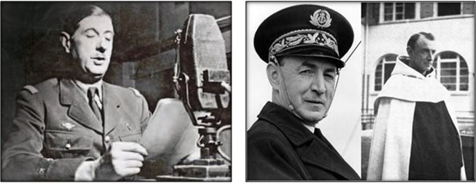
Le général Charles de Gaulle fonda-teur de l’Ordre et l’amiral Thierry d’Argenlieu chancelier. Ce dernier se retirera comme prêtre Carme sous le nom monastique de, Très révérend Père de la Trinité.
Le 28 juin, le premier ministre anglais, Winston Churchill reconnait le général de Gaulle (mise à la retraite d’office par le président Lebrun 2 jours avant…) comme « Chef de Tous les Français Libres » alors même que le Chargé d’Affaires du Gouvernement français lui demande de se constituer prisonnier à la prison de Toulouse sur ordre du général Weygand ! Mais le 4 juillet et après le bombardement de la flotte française stationnée au mouillage à Mers el-Kébir en Algérie, l’Angleterre rompt ses relations avec le gouvernement de Vichy. Alors que le gouvernement français vote les pleins pouvoir au maréchal Pétain ; de Londres, le général de Gaulle prononce sur les ondes de la BBC un nouveau discours ou il déclare à la veille de la fête nationale française du 14 juillet :
« Puisque ceux qui avait le devoir de manier l’épée de la France l’ont laissé tomber, brisée, moi, j’ai ramassé le tronçon du glaive ». Ce dessine ainsi l’idée du glaive que l’on va retrouver sur la « croix » du futur ordre de la Libération.
Après avoir constitué l’organisation militaire des « Français Libres » en Angleterre, et avoir été condamné « à la peine de mort » par un tribunal militaire aux ordres de Vichy, le général de Gaulle signe avec le gouvernement britannique un accord reconnaissant la France Libre le 7 aout 1940. Le Tchad, le Cameroun et le Congo se rallient à leur tour au Chef de la France Libre. Aussi le 31 aout, le général de Gaulle s’embarque pour l’Afrique Equatoriale Française à bord du navire britannique « Westernland » dans le but de rallier à lui la France libre de l’Afrique, sous le nom de code « Opération Menace ». C’est à l’occasion de son arrivé à Douala au Cameroun qu’entre le 8 et le 12 octobre 1940, le général fait part au capitaine de vaisseau Thierry d'Argenlieu de ses intentions politiques et lui précise son intention de :
« Créer un insigne nouveau face à l'imprévisible conjoncture. Il récompensera ceux des nôtres qui se seront signalés dans cette haute et âpre campagne, pour la libération de la France ..... », le général de Gaulle s’interdisant de distribuer la Légion d’Honneur par respect des institutions françaises.
LES CROISES DE LA DELIVRANCE
Arrivé à Brazzaville, le 24 octobre 1940, de Gaulle décide de lancer le 16 novembre 1940, l'acte N° 7 par lequel il annonce sa décision de créer un nouvel ordre qui prendra le nom d’« Ordre de la Délivrance » et dont les membres seraient les « Croisés de la Délivrance ». Le choix du terme « Croisés » reprend, en souvenir de la tradition médiévale, l'idée de serviteurs d'une cause et d'un idéal noble, presque religieux. L’insigne se rapproche d’ailleurs assez clairement de l'Ordre Royal de Saint-Michel (crée en 1469 par Louis XI. Celui-ci combattant le duc de Bourgogne, Charles Le Téméraire, avait décidé de créer un ordre afin d'encourager ses vassaux à rejoindre sa bannière).
On déconseilla cependant au général de Gaulle - qui avait fait appel au professeur René Cassin pour régler les textes constitutif de ce nouvel ordre - d’abandonner le terme de « croisés » trop connoté, pour lui préférer celui de « Compagnon » qui a été utilisé plusieurs fois dans notre Histoire (Ex : « Les compagnons de Jeanne d’Arc »).
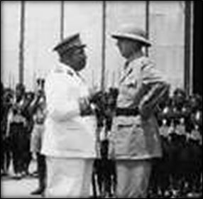
Le général de Gaulle avec le gouverneur général de l’AEF, Félix Eboué. Brazzaville. 1941L'insigne est conçu alors que les textes définitifs de l'ordonnance sont encore en cours de rédaction. Les détails sont fixées à Londres par le décret du 29 janvier 1941 qui règle l'organisation de l'Ordre et fixe les caractéristiques de l'insigne. Il est aussitôt décidé, à l’image des premiers ordres chrétiens de Terre Sainte, que l’ordre ne comportera qu’un seul et unique grade et que l’insigne de l’ordre se portera sur la poitrine à gauche juste après celui de la Légion d'Honneur et avant la Médaille Militaire.
La première promotion de l’ordre se tiendra le 29 janvier 1941 et comportera 9 membres dont 4 à titre posthume. Les cinq premiers compagnons (vivants) formeront le Conseil de l'Ordre, qui assureront leurs missions de combattants tout en se réunissant régulièrement chaque fois que possible (Décret du 29 janvier 1941).
Ces 5 premiers « Compagnons » de l’Ordre représentatifs des combattants sans distinction de classe et d'origine qui se sont spontanément engagés dans le combat de libération de la France à l'appel du général de Gaulle, se nomment : Le Capitaine de vaisseau Thierry d'Argenlieu comme premier Chancelier, le gouverneur général de l'Afrique Equatoriale Française Félix Eboué, le lieutenant Emmanuel d'Harcourt, Edmond Popieul, officier de la marine marchande et Henry Bouquillard adjudant dans les forces aériennes françaises libres.
UN CONSEIL DE L’ORDRE EN GUERRE DEVENU GARDIEN DE LA TRADITION ET DE L’IDEAL VOULU PAR LE GENERAL DE GAULLE
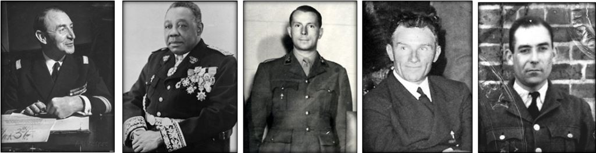
Les 5 premiers compagnons de l’Ordre membres du Conseil de l’Ordre de la Libération Thierry d'Argenlieu ; Félix Eboué, Emmanuel d'Harcourt, Edmond Popieul et Henry Bouqillard
A l'origine, le rôle du Conseil de l’Ordre de la Libération a pour but principal d’étudier les nominations dans l'Ordre et de rendre un avis qui est soumis à la signature du général de Gaulle dernier et seul décideur des nominations des futurs Compagnons de la Libération. Comme on l’a vu, en principe, et « si les opérations militaires le permettent », le Conseil de l’Ordre doit se réunir une fois par trimestre pour délibérer sur les propositions qui lui parviennent. Mais nous sommes en guerre et le Conseil n'est pas sédentaire. Ses membres sont dispersés au gré de leurs fonctions civiles ou militaires : Le gouverneur Eboué réside à Brazzaville, Thierry d'Argenlieu remplit plusieurs missions diplomatiques (au Canada notamment) quand à d'Harcourt, Popieul et Bouquillard ils partent en mission respectivement en France, sur mer et dans les airs. Le conseil peut répondre à une convocation exceptionnel du chef des Français libres afin d’examiner des demandes de propositions urgentes émanant de chefs de corps des Français Libres ou de Chef de réseau de résistances. A la fin de la Guerre, l’ordre est forclos le 23 janvier 1946 et le conseil de l'Ordre aura pour mission de prolonger et de maintenir la tradition et l'idéal voulus par le général de Gaulle ainsi que d'assurer la discipline de l'Ordre. Il aura récompensé : 1038 compagnons de la Libération, seulement 5 communes telles que : Nantes, Grenoble, Paris, Vassieux-en-Vercors et l’Ile de Sein, ainsi que 18 unités combattantes de la France Libre.
Les Chanceliers de l’Ordre de la Libération seront : l’Amiral Georges Thierry d'Argenlieu (1941-1958), le Général François Ingold (1958-1962), Monsieur Claude Hettier de Boislambert (1962-1978), Le général d'armée (cr) Jean Simon, (1978-2002), le général d'armée (cr) Alain de Boissieu (2002-2006), Monsieur le Ministre Pierre Messmer (2006-2007), Monsieur le professeur François Jacob (2007-2011) et le colonel (h) Fred Moore (depuis 2011).
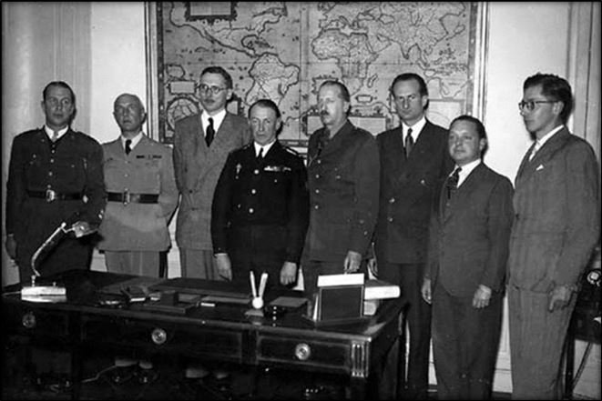
Réunion du Conseil de l'Ordre de la Libération en 1945 : De G. à D. : Guy Baucheron de Boissoudy,le général Ingold, René Pleven, l'Amiral Thierry d'Argenlieu (Chancelier de l’Ordre) le général Koenig, Geoffroy Chodron de Courcel, Claude Hettier de Boislambert et André Postel-Vinay.
L’INSIGNE DE L’ORDRE DE LA LIBERATION
Comme on l’a dit auparavant, le collier de l’ordre de la Libération est directement inspiré de l’ordre de Saint-Michel et ce particulièrement quand on examine le médaillon de l’ordre de forme ovale.
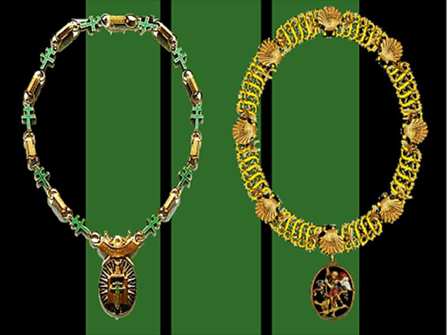
L’Ordre de la Libération directement inspiré de l’ordre de Saint-Michel
Quand au choix de l’insigne de l’ordre, bien que le général de Gaulle parla de « Glaive » dans son discours de Londres le 14 juillet 1940, on constate dans les différentes étude ci-dessous que si le ruban sera rapidement adopté en vert et noir, plusieurs tentatives de création du bijoux devront être réalisées avant de choisir sa forme rectangulaire si particulière. La seule décoration française a avoir une telle forme est celle de la médaille de l’Aéronautique créée le 14 février 1945 (donc postérieur à l’ordre de la Libération). Le projet du nouvel insigne de l’ordre (assez injustement appelé « croix ») est réalisé par le capitaine des Forces Françaises Libre, Tony Mella et la maquette est exécutée par une succursale londonienne (les établissements John Pinches) du fameux joaillier Cartier qui fabriqua les premières croix. Après la Libération, la réalisation fût confiée à la Monnaie de Paris.
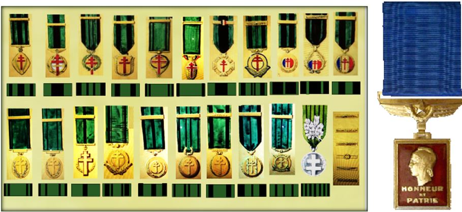
Etudes des futures croix de la Libération et Médaille de l’Aéronautique
LA FORME DE LA « CROIX » ET SON RUBAN
La forme de la « croix » si particulière de l’Ordre de la Libération (qu’on ne retrouve pas dans la phaleristique française, sauf la médaille de l’Aéronautique) aura plusieurs versions (notamment avec des croix de lorraine posée sur le glaive, peinte ou non en émail noir). Quant au ruban de l’ordre il a connu 2 versions : la première avec deux bandes noires en diagonales, à l’image des médailles britanniques, de novembre 1940 à septembre 1942 puis la deuxième avec deux larges bandes externes et deux plus petites au centre en verticale à partir de novembre 1942. La couleur même du ruban semble directement inspirée de la médaille commémorative de la Guerre de 1870-1871 créée le 9 novembre 1911 et dont le ruban vert incarne l’espérance de la Libération et le noir celui du deuil de la défaite.
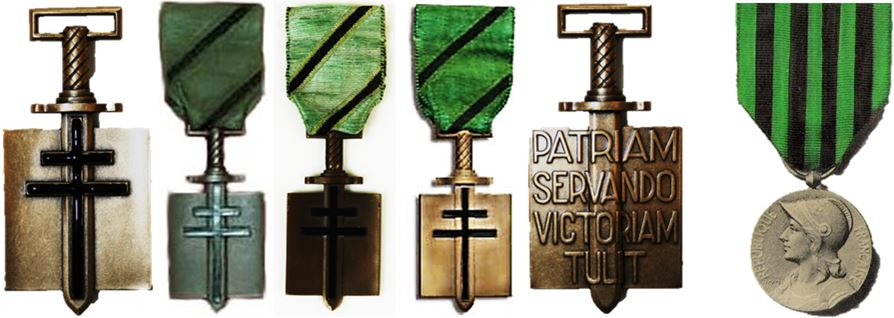
Différentes croix de la Libération du premier modèle (1940-1942). La devise de l’ordre « Patriam Servando - Victoriam Tulit » signifie « En servant la Patrie, il a remporté la victoire ».
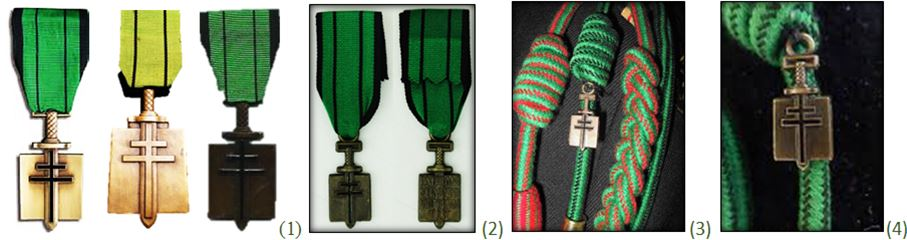
Nous présentons maintenant différentes croix de la Libération du deuxième modèle (1942-1946) (1). Le modèle en réduction (recto/verso) (2). Les hommes des régiments décorés de l’ordre de la Libération, portent la fourragère du même nom sur leur uniforme par décision du 23 avril 1996 (3). Toutefois, à titre dérogatoire, et bien que n’ayant pas reçu la croix de la Libération (et pour cause), il fut décidé le 14 juillet 2011 que l’équipage du porte-avion Charles-de-Gaulle porterait également cette fourragère, ce qui fut fort contesté à l’époque… Détail de la fourragère (4).
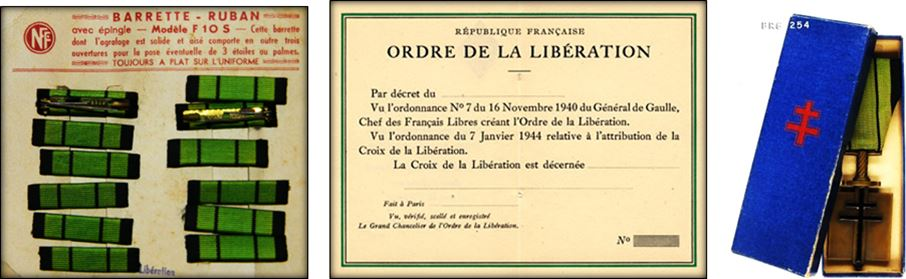
Jeu de barrettes, diplôme vierge de Compagnon (1949) et boite de la croix aux insignes FFL
LE COLLIER DE GRAND-MAITRE DE L’ORDRE DE LA LIBERATION
Comme dans tous les ordres de chevalerie, le fondateur porte le titre de « Grand-Maitre » et se trouve à ce titre revêtu du collier de l’ordre. Ainsi faisaient les rois de France et les Empereur, ainsi le fera le général de Gaulle. Le collier de l’ordre de la Libération fut réalisé en 1945 par l'orfèvre et maitre ferronnier Gilbert Poillerat (1902-1988). Le collier sera officiellement remis au Grand-Maitre par le Chancelier, l'amiral Thierry d'Argenlieu, le 31 août 1947. Le collier est composé de neuf maillons d'or réunis par des croix de Lorraine d'émail vert et qui portent le nom des territoires de la France d'Outre-Mer (à l’époque on disait «L’Empire Colonial ») ralliés à la France Libre. A la mort du général le 9 novembre 1970, ce collier ne sera plus jamais porté et sera alors exposé au musée de l’Ordre de la Libération (Paris).
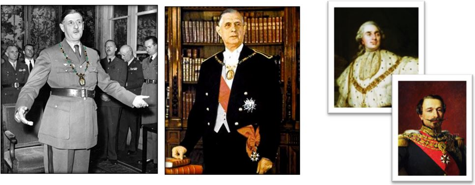
Le général de Gaulle, unique Grand Maitre de l’Ordre de la Libération portera le collier de l’ordre, lors de son intronisation comme Grand-Maitre en 1947 et onze ans plus tard, lors de son élection comme XVII° Président de la République Française. Il le portera sur sa photo officielle à la place du grand collier de la Légion d’honneur dont il portera cependant le grand cordon (1958). Cette tradition est directement inspirée de la Monarchie Française (Ex : photo de Louis XVI) ou de l’Empire (Ex : photo de Napoléon III).
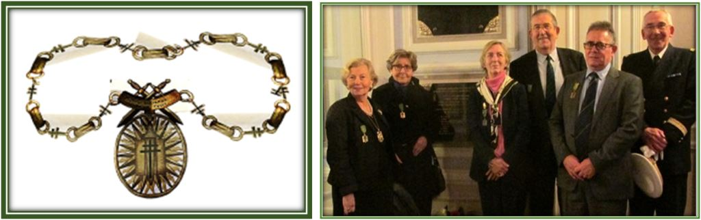
Insigne du Collier de Grand Maitre de l’Ordre de la Libération et des membres de l'Association des Familles de Compagnons de la Libération (AFCL) portant la croix à droite.
Les 9 médaillons du collier de grand-maitre de l’ordre de la Libération portent le nom des territoires de l’Empire Colonial Français ralliés à la France Libre animée par Charles de Gaulle, soir : Nouvelles-Hébrides (18.07.1940), Tchad (26.08.1940), Cameroun (27.08.1940), Moyen-Congo (29.08.1940), Oubangui-Chari (30.08.1940), Tahiti (31.08.1940), Établissements français d’Océanie (02.09.1940), Établissements français de l’Inde (09.09.1940) et Nouvelle-Calédonie (24.09.1940).
La croix de la Libération est aussi portée par les Compagnons de la Libération et dans certaines circonstances par leurs descendants directs à l'occasion des cérémonies commémoratives consacrées à l'Ordre. Dans ce cas l'insigne se porte à droite sur la poitrine, ce qui est un privilège unique dans la phaleristique française montrant bien, une fois de plus, l’originalité de ce dernier ordre de chevalerie républicaine !
LES CHANCELIER DE L’ORDRE DE LA LIBÉRATION
Les Chanceliers de l’ordre incarnent la diversité de l’ordre (civil et militaire) et portent les valeurs de l’ordre. De janvier 1941 à novembre 2012, huit chanceliers se sont succédés. Le dernier d’entre eux est désormais le colonel Fred Moore, d’origine anglaise naturalisée français en 1926 et ancien opticien engagé dans les FFL le 1er juillet 1940. Depuis sa nomination comme chancelier de l’Ordre de la Libération le 12 octobre 2011, le Conseil de l'ordre de la Libération a été remplacé en novembre 2012 par le Conseil national des communes « Compagnon de la Libération » et Fred Moore, deviendra le premier délégué national de ce nouveau Conseil (tout en conservant les prérogatives de Chancelier).
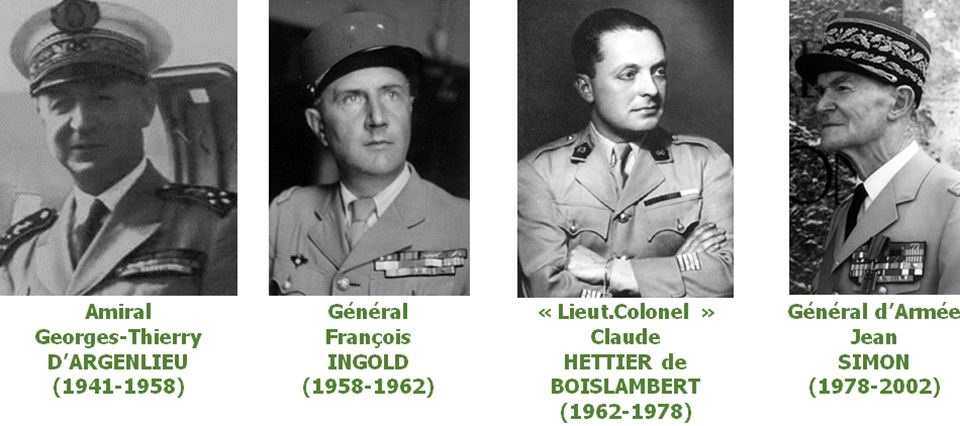
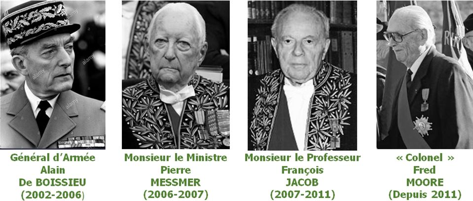
Pendant la courte vie de l’ordre de la Libération (soit 5 ans de janvier 1941 à janvier 1946), l’insigne ne sera attribué qu’à 1.036 personnes, 5 communes et 18 unités combattantes. A chaque fois que le général de Gaulle remettait l’insigne à un nouveau titulaire, il prononçait ces paroles officielles :
« Nous vous reconnaissons comme notre compagnon pour la libération de la France dans l’honneur et par la victoire ».
En quittant le pouvoir en janvier 1946, le général de Gaulle signera un décret qui mettra fin à l’attribution de la croix de la Libération (décret du 23 janvier 1946). Le but de la libération étant atteint, l’ordre est alors forclos. Il ne sera ré-ouvert par son Grand Maître qu’en deux occasions exceptionnelles, en 1958 pour Winston Churchill et en 1960 pour le roi d’Angleterre George VI, mais à titre posthume.
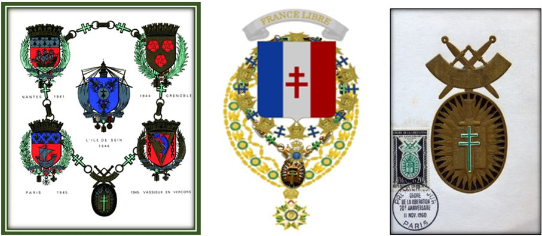
L’ordre de la Libération est naturellement présent dans la gravure représentant les blasons des 5 villes de France décorées de l’Ordre de la Libération. De même lorsque le général de Gaulle sera fait chevalier de l’ordre des Séraphins du Royaume de Suède, un blason à la croix de Lorraine lui sera dessiné (il avait cependant les propres armes de sa famille). Le dessin représentera ces armoiries, avec la devise « France libre », entourées du collier de l’ordre des Séraphins auquel nous avons imaginairement ajouté les colliers de l’ordre de la Libération et de la Légion d’Honneur. L’ordre de la Libération fera également l’objet de différentes éditions philatéliques notamment à l’occasion des 20 ans de la création de l’ordre en 1960.
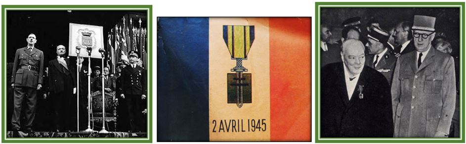
Drapeau commémoratif de la remise de la croix de la Libération à la ville de Paris et réception exceptionnelle de la croix à Sir Winston Churchill en 1958
Aujourd’hui le « colonel » Fred Moore, dernier chancelier de l’ordre de la Libération, cet ancien opticien et combattant des FFL, porte aujourd’hui sur ses épaules de 96 ans, l’âme et les valeurs de « l’Homme de l’Appel du 18 Juin » qui avait décidé de relever, quasiment seul, le « Glaive de la Libération » que la France humiliée avait laissé tomber : « C’est sans doute la conviction inébranlable d’être du côté de l’honneur et d’appartenir à une petite armée de volontaires, partageant un idéal commun qui ont permis à la France Libre d’être ce qu’elle a été » (Fred Moore dans « Toujours Français Libre ! » Edition Elytis – 2014).
Partager cette page